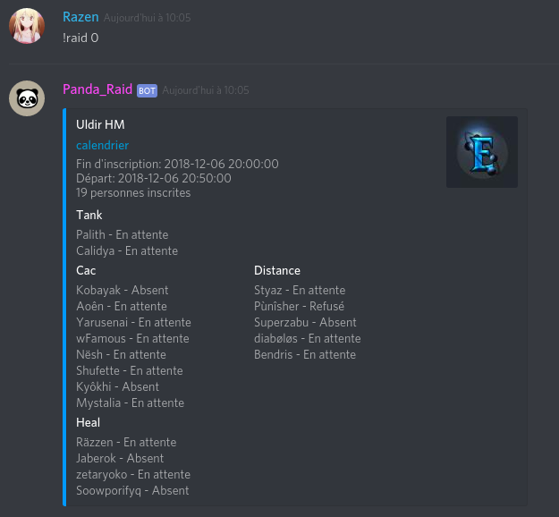

My World of Warcraft guild decided to switch from a web forum + teamspeack to discord. The person in charge of creating the discord server was able to integrate most of the functionalities of the forum but couldn't find a discord bot compatible with our web calendar so she asked me if I could help her. As I've never code a discord bot before I first had to check how it work and then find a way to display the information from our web calendar.
There is a lot of good tutorial online on how to create a simple discord bot. This is quite easy, you just need to create a node.js app and a bot on the discord website and linked them together with a token provided on the discord application page.
client.on("message", message => {
if (message.author.bot) return;
//SPLIT to get command and argument
if (message.content.indexOf(config.prefix) !== 0) return;
const args = message.content.slice(config.prefix.length).trim().split(/ +/g);
const command = args.shift().toLowerCase();
if(command === 'ping') {
message.channel.send('Pong!');
}
}

The only hard thing in this part is that the mushraid api exemple are in PHP and I had to find the coresponding function in javascript. In order to get all the information I needed on a specific event I had to acces it with its id. So i add two commands:


To merge the two command in one I needed to use async function. So when I type "!raid 0" it first send a fetch request to get the id of the next raid, I wait for this request to finish and then send an other request using this id to get the raid information.
try{
const response = await fetch(url);
const data = await response.json();
return data;
} catch(err){
console.log(err);
}
Lastly to get a cleaner display I used the RichEmbed constructor of Discord.js features. 
At the end this was an interesting litle project that teach me how to use async function and develop a node.js app.